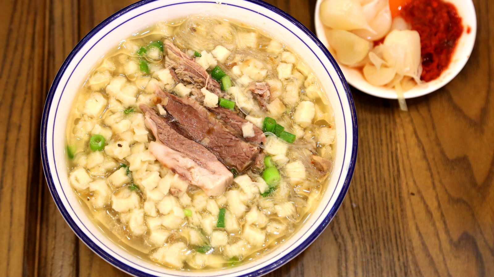

长安美食
从清晨的胡辣汤，到深夜的烤肉摊
镇街招牌

羊肉泡馍
非遗技艺待客头牌
自己掰馍、厨师烹汤，馍筋光滑、汤浓味重。掰馍的仪式感，是西安人待客的诚意。

肉夹馍
中式汉堡街头顶流
白吉馍外脆里软，腊汁肉肥而不腻，一口咬下，"中式汉堡"名不虚传。

biangbiang面
陕西八大怪油泼辣子
面如裤带，油泼辣子配蒜瓣。那个复杂的"biang"字，本身就是长安的市井趣味。

凉皮
秦镇米皮四季皆宜
筋、薄、细、穰，配上面筋、黄瓜丝，泼一勺辣子，酸辣爽口，四季皆宜。

肉丸胡辣汤
早餐灵魂麻辣鲜香
西安人的早餐灵魂。麻、辣、鲜、香，配一个坨坨馍，一天从这口热汤开始。
千年古法

甑糕
千年炊具枣米相叠
糯米与红枣层层相叠，用古老的"甑"蒸制，绵软香甜，甜到心里。